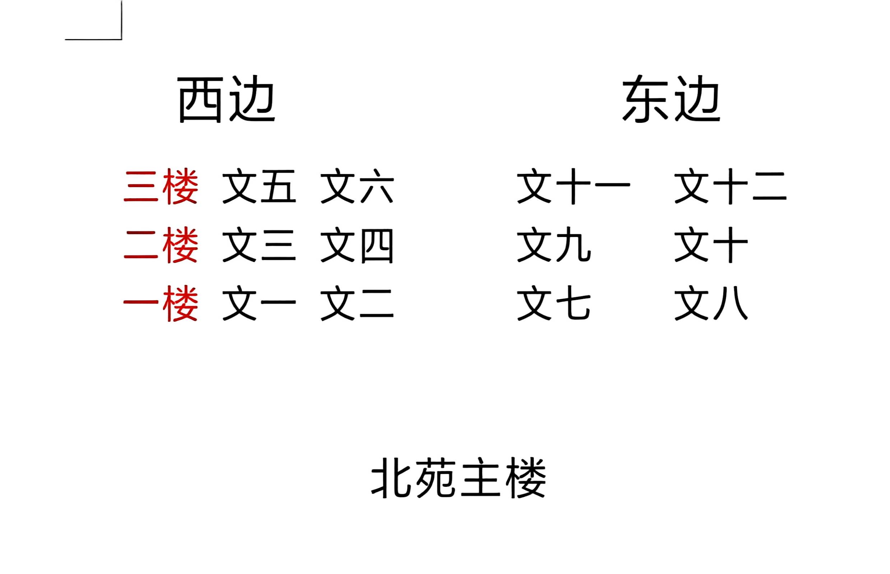

图书馆和自习室是新生入学后使用频率最高的学习场所。本篇把两校区图书馆开放时间、自习室分布、座位预约与占座规则、选座小技巧一次性整理清楚，配合《校园卡》《公共浴室》等指南一起看，帮你快速找到适合自己的学习角落。
以下内容均来自在校同学实测，具体时间以馆内公告和「完美校园」为准。
一、图书馆开放时间
两校区图书馆均刷校园一卡通入馆，无需额外预约；考试周会适当延长开放时间，是复习冲刺的首选。
1. 大学道校区图书馆
位于校区中轴靠近南院一侧，是面积最大、座位最多的馆舍。工作日开放时间长，周末略有缩短。

2. 学院路校区图书馆
建校较早，馆舍面积偏小，但胜在离宿舍近、环境安静，适合日常看书、写作业。
3. 开放时间一览
| 校区 | 工作日 | 周末 | 考试周 |
|---|---|---|---|
| 大学道校区 | 7:30–22:30 | 8:00–22:00 | 延长至 23:00 |
| 学院路校区 | 8:00–22:00 | 8:30–21:30 | 延长至 22:30 |
注：节假日、寒暑假开放时间另行通知，以馆内公告为准。
温馨提示：闭馆前 15 分钟停止入馆并提醒离馆，记得带好随身物品；考试周座位紧张，建议提前到场占座。
二、自习室分布与怎么选
除图书馆外，各教学楼晚间会开放若干自习室，按楼栋特点选择能大幅提升学习效率。
1. 图书馆内自习区
桌椅固定、灯光充足、插座覆盖率高，是长时间备考的首选；研讨区适合小组讨论，但需保持低声。
2. 教学楼晚间自习室
- 文科楼：多为阶梯教室改造，插座充足、空间开阔，适合需要插电用电脑的同学；
- 理科楼：小自习室安静但座位少，适合专注刷题、看书；
- 北院 / 南院公共教室：无课时段也可临时自习，注意避开有课班级。

3. 南院 6 号楼静音舱
新装的独立静音舱，隔音好、带电源，适合背单词、线上面试、录口语。数量有限，先到先得。

小提示：理科楼小自习室座位紧俏，建议提前半小时到；考研冲刺阶段可优先预约带隔断的静音位。
三、座位预约与占座规则
考研、考公自习位通过「完美校园」小程序预约，系统按规则自动释放，既保障公平也避免资源浪费。
预约渠道与放号时间
- 预约工具：「完美校园」微信小程序（绑定校园卡后使用）；
- 放号时间：每晚 22:00 放出次日全天座位；
- 选座范围：图书馆自习区固定座位、部分教学楼自习室。
完整预约流程
- 打开「完美校园」小程序，进入「座位预约」；
- 选择校区、场馆（图书馆 / 自习室）与日期；
- 在楼层平面图里点选空闲座位，确认预约；
- 到馆后刷校园一卡通签到入座，离座时在系统内点「暂离」或「退座」。
占座规则提醒：
- 临时离开超过 30 分钟，系统会自动释放座位，无需手动操作；
- 请勿用书本、水杯长时间占座——既违反管理规定，也影响其他同学使用；
- 离馆务必「退座」，否则可能产生违规记录、影响后续预约。
四、选座与学习效率小贴士
- 固定时间、固定座位：把每天同一时段、同一座位养成习惯，大脑会更快进入状态；
- 远离干扰源：尽量避开门口、饮水机、通道，优先选靠窗自然光位置；
- 带好装备：耳塞、充电宝、水杯常备，减少来回走动打断节奏；
- 错峰自习：晚饭后、考试周是高峰，可错开或选择人少的教学楼自习室。
好的学习场所不是「抢」来的，而是「养」出来的——固定时间、固定座位，比临时找座更高效。
唐山师范学院吧务组
2026年8月1日